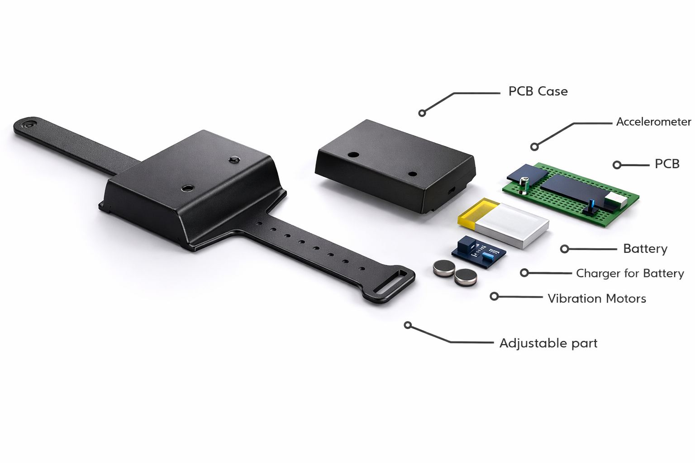
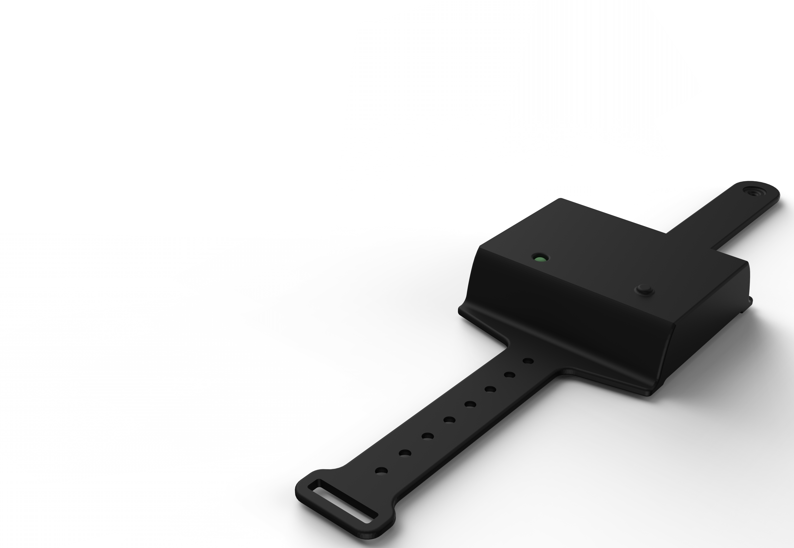
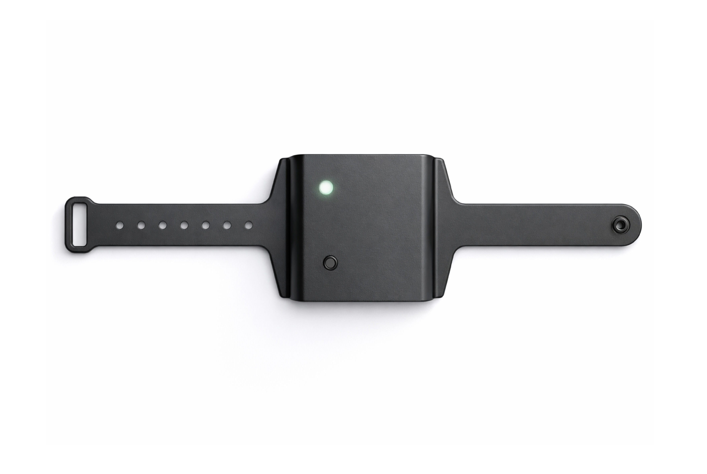
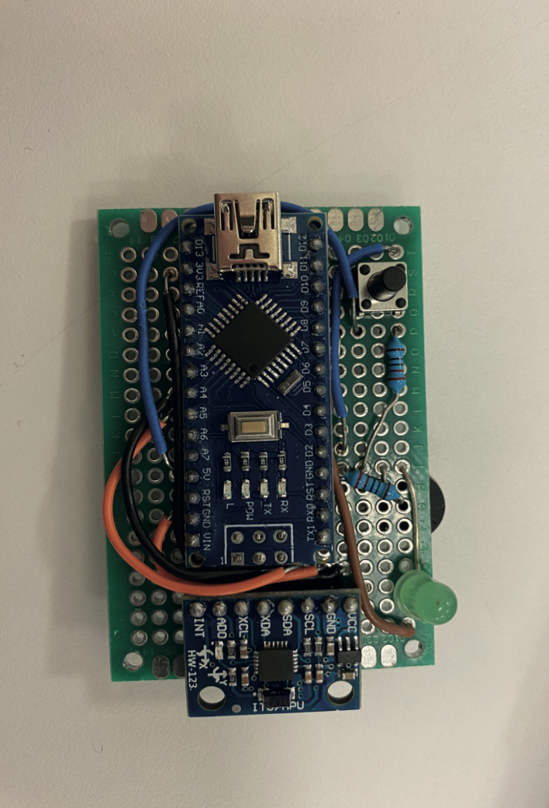
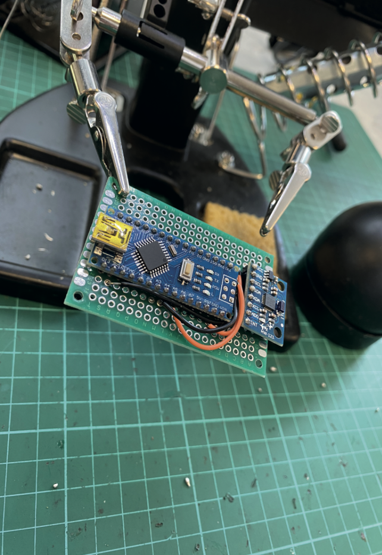
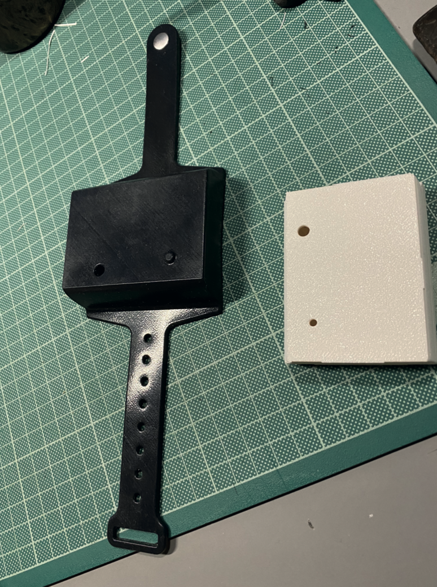
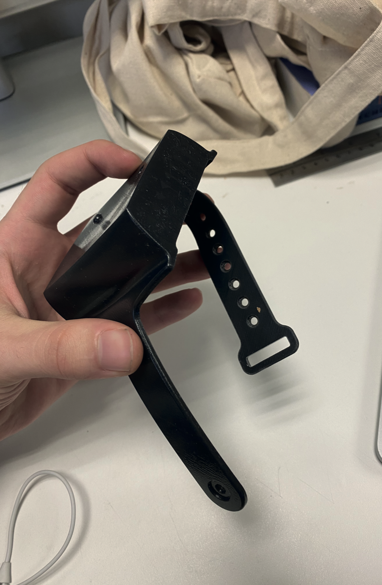

Beginner skiers often struggle to control their speed and lack awareness of how fast they are going. Without enough experience or physical control, they can easily exceed safe speed limits, increasing the risk of falls and injuries.
Even when instructors are present, real-time awareness of speed is limited. In many cases, beginners can’t recognize when they’re approaching dangerous speeds, which makes them more vulnerable on the slopes.



- At 25 mph, the wristband activates intermittent vibration (pulse mode), warning the user that they are approaching a risky speed.
- At 30 mph and above, the device switches to continuous vibration, signaling that the speed limit has been exceeded.
- The vibration continues until the user slows down to a safer level.



